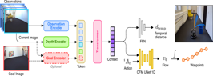
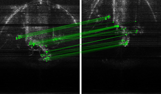
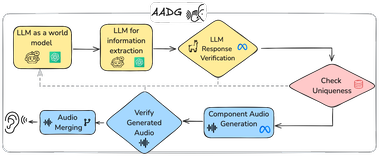
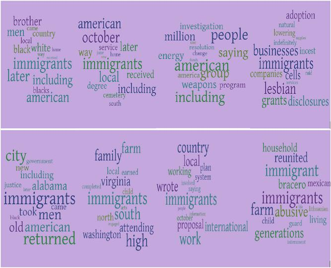
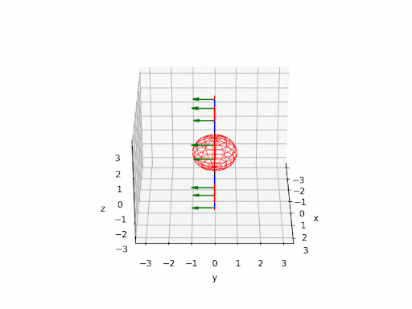
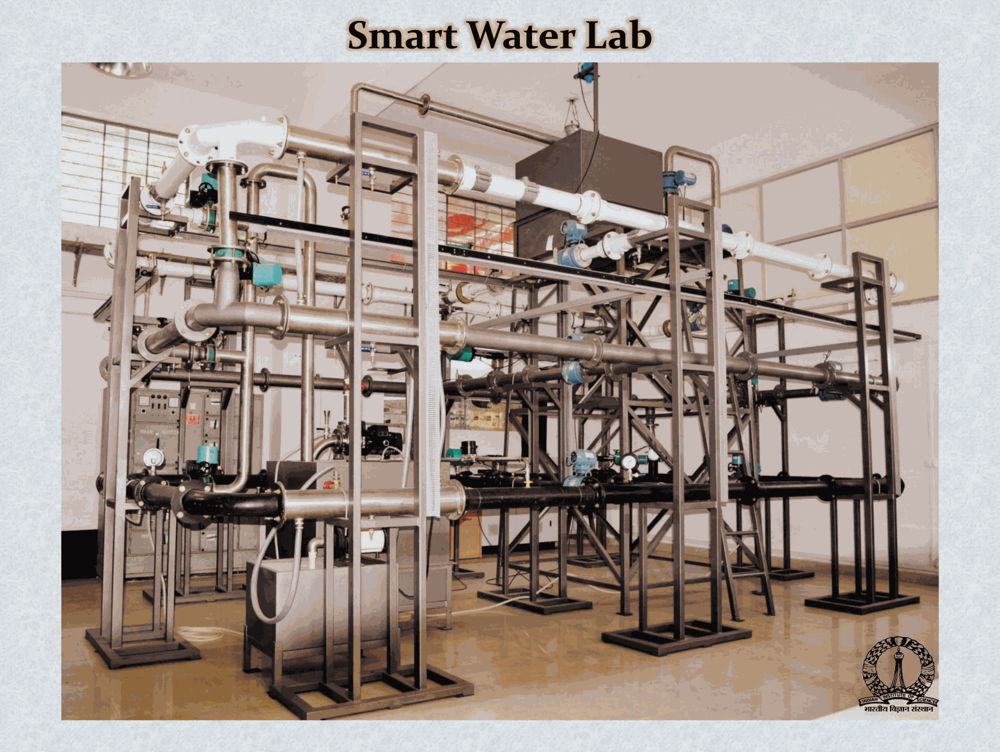
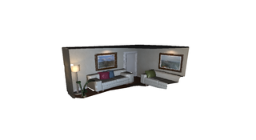
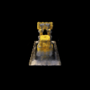
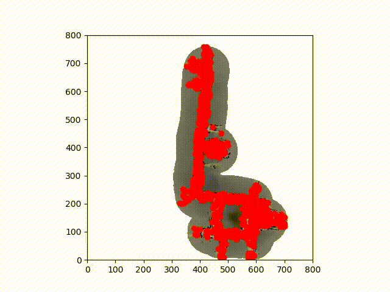

Hello! I am an ELLIS PhD Student advised by Professor Wolfram Burgard and co-advised by Professor Cordelia Schmid. My research interests span a lot of fields but broadly
I work on building robust models for robot perception across multiple modalities - vision, language, sonar, audio etc. and their use in downstream applications such as robot navigation.
I graduated from Carnegie Mellon University where I was fortunate to be a part of the Robot Perception Lab.
At CMU, I worked on Underwater Perception and Object SLAM. I was also a Robotics Software Engineer at a startup where I worked on the localization stack
for a mobile robot system.
- We test how images, instructions, and visual memory causally affect four VLM-based navigation policies.
- We then test whether navigation concepts and explicit reasoning remain steerable after fine-tuning and visual shift.
MetricNet: Recovering Metric Scale in Generative Navigation Policies
- Designed a network to predict the scaling factor for generative navigation policies to create metric waypoints in the real-world
- Used the real-world waypoints to guide the robot away from obstacles and towards the goal beating SOTA.

FlowNav: Combining Flow Matching and Depth Priors for Efficient Navigation
- Used Conditional Flow Matching(CFM) along with depth embeddings for efficient goal-conditioned robot navigation as opposed to diffusion policies
- Achieved the higher accuracy and runtime efficiency compared to the SOTA.

SONIC: Sonar Image Correspondence using Pose Supervised Learning for Imaging Sonars
- Solved data association for underwater SLAM through a novel method for sonar image correspondence using Learned Features.
- Introduced a pose-supervised network that generates feature descriptors robust to changes in
viewpoints, enabling more reliable feature matches in sonar based localization and mapping.

Did You Hear That? Introducing AADG: A Framework for Generating Benchmark Data in Audio Anomaly Detection
- Developed a novel audio generation framework (AADG) using LLMs and text-to-audio models to simulate realistic scenarios specifically for Audio Anomaly Detection and Localization.
- Expanded anomaly detection datasets beyond industrial sounds, addressing diverse real-world environments like telephonic or video-derived audio.
- Created a modular, rigorously verified framework enabling scalable and reliable generation of realistic audio data,
improving robustness of anomaly detection models against out-of-distribution scenarios.

Understanding Political Polarization using Language Models: A dataset and method
- Finetuned Longformer on a scraped Wikipedia dataset to find most important tokens based on attention score.
- Used other conventional techniques such as Word2Vec, Doc2Vec and BERT based models understand words which lead to polarisation.
- Paper accepcted at AAAI 2023 Workshop on AI for credible elections and selected for publication at the AI Magazine Fall 2023.

Quadric SLAM
- Implemented on Object based semantic SLAM, created low-memory metric semantic maps for multi-robot communication.
- Formulated a graph based SLAM. Used quadric factors with the factor graph with underlying visual inertial odometry.
- Designed feature descriptors for SONAR using unsupervised learning for underwater SLAM.
- Used an encoder decoder structure with CNNs with custom loss functions to learn without labels.

Detecting and Localizing Leaks in Intermittent Water Distribution Networks
Samiran Gode,
Sheetal Kumar K R,
Sindhu H J,
P G Prasad,
M S Mohan Kumar,
Rajesh Sundaresan
- Developed an algorithm for detecting and localizing multiple leaks in Water Distribution Systems with Intermittent water
supply for Bengaluru a city of 8.5mil.(As part of EqWATER funded by Ministry of Human Resources Development, Govern-
ment of India).
- Automated intermittent water supply in an experimental system(60m long*100mm dia network, 4L/s) using LabVIEW to
generate scaled-down comparable data with identical disturbances and leaks analogous to field data.
Projects

3D Dense SLAM system using ICP
- Camera Localisation on the ICL-NUIM dataset using Iterative Closest Point Algorithm.
- Used point-based fusion to create a point cloud map

NERF (Volume Rendering and Neural Radiance Fields) Code
- Implemented a Differentiable Renderer for emission-absorption volumes.
- Implemented a ray sampler for optimising volume parameters.
- Used a MLP to map 3D positions to Volume Density and colour

Particle Filter
- Monte Carlo Localization(MCL) based robot localization for an indoor robot using laser rangefinder and odometry.
- Implemented the raycasting based sensor and motion model along with resampling.